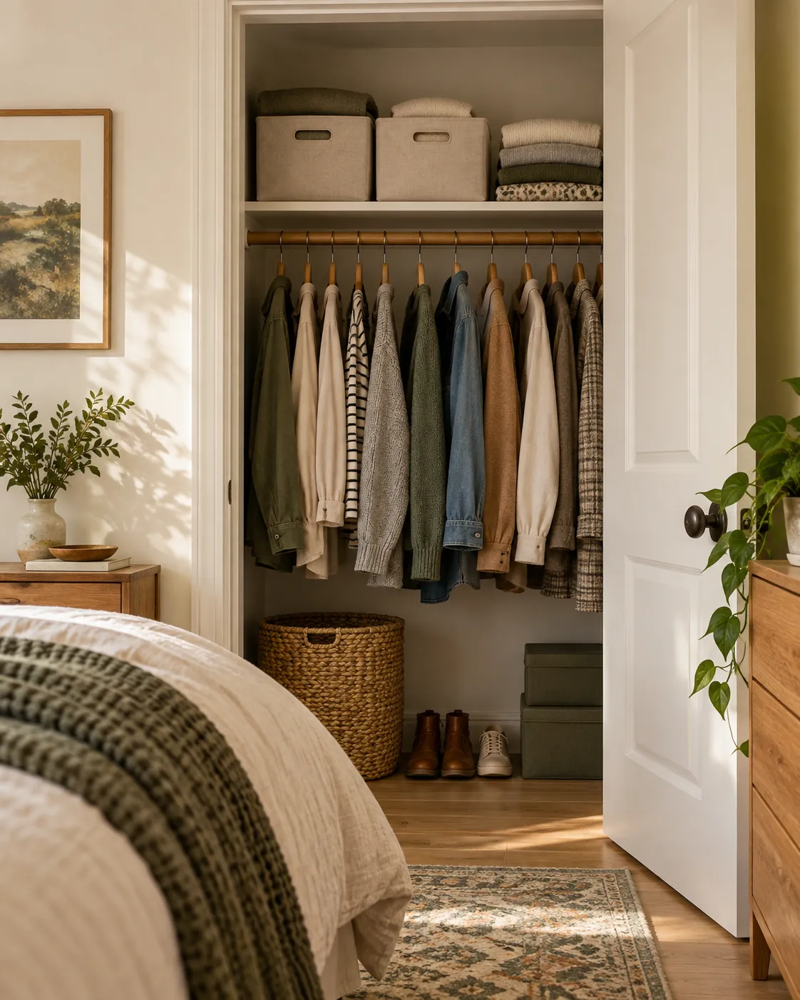

01
MAKE THE SPACE WORK
Start with the shelf above the rod
Sort the top shelf into a few clear groups: spare bedding, occasional accessories or out-of-season layers. Put the most-used items at the front and avoid stacking bins so high that you cannot lift them safely.
IF YOU NEED TO SHOP
What to check
Shelf height, bin handles and what you can reach without a precarious climb.
See option on Amazon →As an Amazon Associate I earn from qualifying purchases.